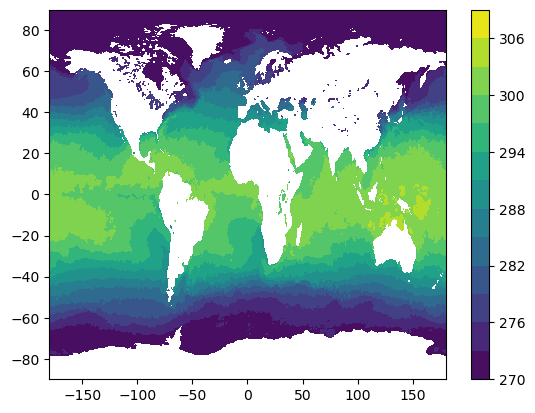
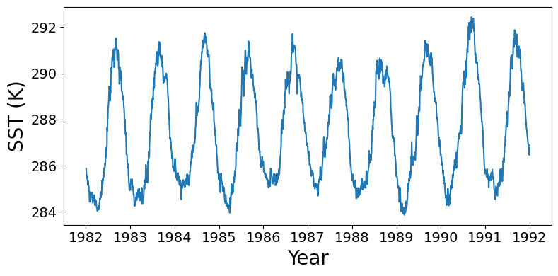
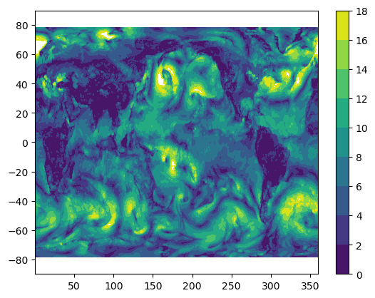
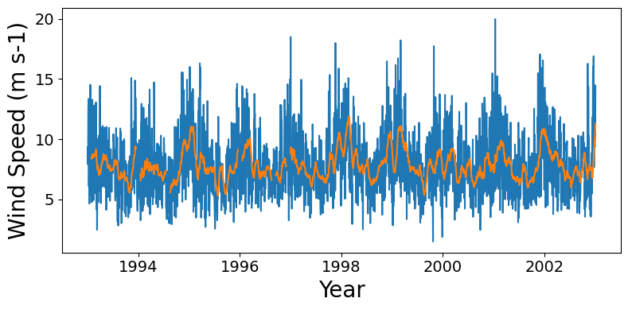
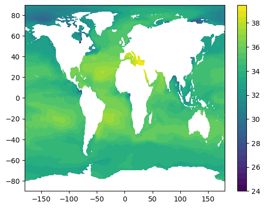
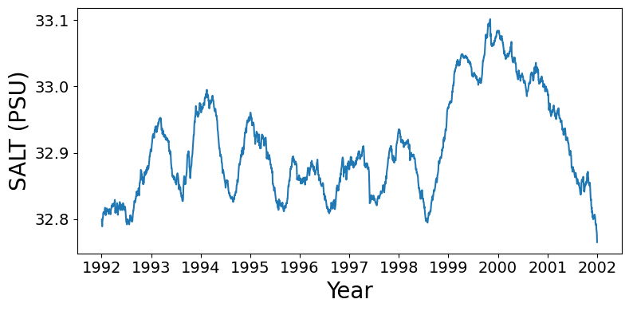
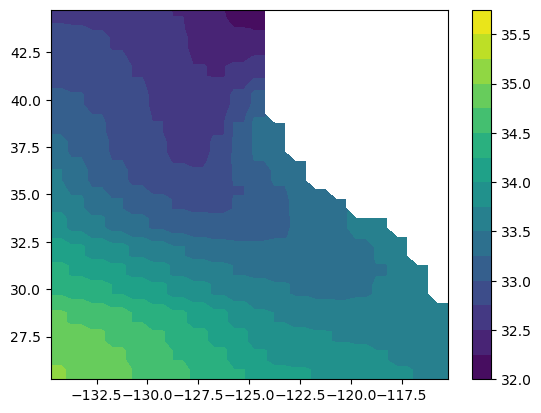
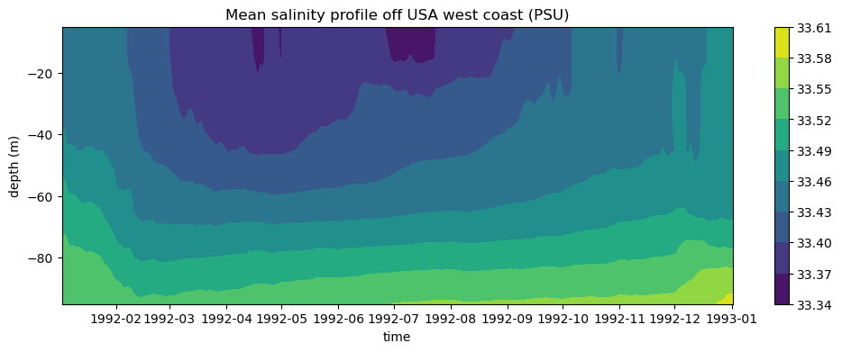

# Filesystem management
import fsspec
import earthaccess
# Data handling
import numpy as np
import xarray as xr
# Other
import matplotlib.pyplot as plt
%matplotlib inlineVirtual Data Set Starter Notebook
Sections
- Obtaining credentials and generating a VDS mapper: Boiler-plate code to get Earthdata Login credentials and apply them to a VDS.
- Load data, explore, and do computations: Shows three examples of opening a VDS with Xarray, then exploring and doing computations with Xarray built-in functions.
- Alternate workflows other than Xarray built-in functions: For those who preffer to work in packages other than Xarray, this section shows briefly how to either (a) extract NumPy/Dask arrays from the Xarray Dataset object, or (b) save a subset of the VDS as a local netCDF file.
Keep in mind: For out-of-cloud use, you may run into access errors if trying to do computations with more than ~20 years of data due to limitations on the number of simultaneous data requests that can be made at once. For complex or large computations with VDS’s, please be in the cloud in the same location as the data (for PO.DAAC this is us-west-2).
Environment
Minimal working installation for Python 3.13.3 environment is
fsspec==2024.10.0
earthaccess==0.11.0
virtualizarr==1.2.0
xarray==2025.1.2
zarr==2.18.4
kerchunk==0.2.7
dask==2024.5.2
h5netcdf==1.3.0
netCDF4==1.7.2
matplotlib==3.9.2
jupyterlab==4.4.21. Obtaining credentials and generating a VDS mapper
Similarly to any access method for NASA Earthdata, access via VDS’s still requires Earthdata Login credentials. Fortunately earthaccess makes this a one-liner. Rerun this line each hour to renew your credentials. If you are doing computations in later sections and suddenly hit access errors, you likely need to rerun this line.
earthaccess.login()<earthaccess.auth.Auth at 0x104a4d550>The remaining task of defining some access keywords and mapper to the VDS is generic and can be wrapped into a function (no modification needed). The mapper will contain all the required access credentials and can be passed directly to xarray. In the future this step will likely be built into to earthaccess but for now we must define it in the notebook. The only inputs to the function are:
- The link to the VDS reference file.
- Whether or not you are accessing the data in the cloud in the same region as the data. For most beginning users this argument will be set to False.
def get_vds_mapper(vds_link, in_cloud_region=False):
"""
Produces a virtudal dataset mapper that can be passed to xarray.
* vds_link: str, link to the mapper
* in_cloud_region: bool, True if in cloud in the same region as the data,
False otherwise.
"""
if in_cloud_region:
fs_data = earthaccess.get_s3_filesystem(daac="PODAAC")
remote_protocol = "s3"
else:
fs_data = earthaccess.get_fsspec_https_session()
remote_protocol = "https"
storage_opts = {"fo": vds_link, "remote_protocol": remote_protocol, "remote_options": fs_data.storage_options}
fs_ref = fsspec.filesystem('reference', **storage_opts)
return fs_ref.get_mapper('')2. Load data, explore, and do computations
The protocol to open the data will be identical for each collection. This section demonstrates the procedure for three data sets, then does some basic computations.
The key action item is locating the VDS file link. In the future there will pathways to discover this information via data set landing pages and CMR metadata searches, but for now, please consult the table of VDS reference file links. If you are out of cloud, make sure the VDS link is for https endpoints and not s3 endpoints.
Loading the data is a one-liner using Xarray. At this point, the ability to utilize the data is limited only by the user’s knowledge of the Xarray package, or subsetting and loading a portion of the data into your package of choice.
2.1 OSTIA-UKMO-L4-GLOB-REP-v2.0
Level 4 sea surface temperature data set, one timestamp per file.
Load data
## Modify vds_link for your desired data set. If in-cloud, set in_cloud_region to True:
vds_link = "https://archive.podaac.earthdata.nasa.gov/podaac-ops-cumulus-public/virtual_collections/OSTIA-UKMO-L4-GLOB-REP-v2.0/OSTIA-UKMO-L4-GLOB-REP-v2.0_virtual_https.json"
vds_mapper = get_vds_mapper(vds_link, in_cloud_region=False)%%time
## No modification needed!
data = xr.open_dataset(
vds_mapper, engine="zarr", chunks={},
backend_kwargs={"consolidated": False}
)
dataCPU times: user 465 ms, sys: 45.4 ms, total: 510 ms
Wall time: 550 ms<xarray.Dataset> Size: 11TB
Dimensions: (time: 15340, lat: 3600, lon: 7200)
Coordinates:
* lat (lat) float32 14kB -89.97 -89.93 -89.88 ... 89.93 89.97
* lon (lon) float32 29kB -180.0 -179.9 -179.9 ... 179.9 180.0
* time (time) datetime64[ns] 123kB 1982-01-01T12:00:00 ... 202...
Data variables:
analysed_sst (time, lat, lon) float64 3TB dask.array<chunksize=(1, 1200, 2400), meta=np.ndarray>
analysis_error (time, lat, lon) float64 3TB dask.array<chunksize=(1, 1200, 2400), meta=np.ndarray>
mask (time, lat, lon) float32 2TB dask.array<chunksize=(1, 1800, 3600), meta=np.ndarray>
sea_ice_fraction (time, lat, lon) float64 3TB dask.array<chunksize=(1, 1800, 3600), meta=np.ndarray>
Attributes: (12/39)
Conventions: CF-1.4, ACDD-1.3
title: Global SST & Sea Ice Analysis, L4 OSTIA, 0.05...
summary: A merged, multi-sensor L4 Foundation SST product
references: Donlon, C.J., Martin, M., Stark, J.D., Robert...
institution: UKMO
history: Created from sst.nc; obs_anal.nc; seaice.nc
... ...
project: Group for High Resolution Sea Surface Tempera...
publisher_name: GHRSST Project Office
publisher_url: http://www.ghrsst.org
publisher_email: ghrsst-po@nceo.ac.uk
processing_level: L4
cdm_data_type: gridPlot global sea surface temperature for first timestep
%%time
sst_t0 = data["analysed_sst"].isel(time=0)
plt.figure()
plt.contourf(sst_t0["lon"], sst_t0["lat"], sst_t0.values, levels=np.arange(270, 310, 3))
plt.colorbar()CPU times: user 2.84 s, sys: 288 ms, total: 3.13 s
Wall time: 5.6 s
Time series of regional mean sea surface temperature
Subset to 10 x 10 degree window off the USA northwest coast, compute mean over this window for each timestep. Currently the time bounds are set for the first decade of data.
time_bounds = ("1982-01-02T00:00:00", "1992-01-02T00:00:00")
lon_bounds = (-135,-125) # for -180 to 180 domain
lat_bounds = (35, 45)data_subset = data.sel(time=slice(*time_bounds)).sel(lon=slice(*lon_bounds), lat=slice(*lat_bounds))
data_subset<xarray.Dataset> Size: 4GB
Dimensions: (time: 3652, lat: 200, lon: 200)
Coordinates:
* lat (lat) float32 800B 35.03 35.08 35.12 ... 44.88 44.92 44.97
* lon (lon) float32 800B -135.0 -134.9 -134.9 ... -125.1 -125.0
* time (time) datetime64[ns] 29kB 1982-01-02T12:00:00 ... 1992...
Data variables:
analysed_sst (time, lat, lon) float64 1GB dask.array<chunksize=(1, 200, 200), meta=np.ndarray>
analysis_error (time, lat, lon) float64 1GB dask.array<chunksize=(1, 200, 200), meta=np.ndarray>
mask (time, lat, lon) float32 584MB dask.array<chunksize=(1, 200, 200), meta=np.ndarray>
sea_ice_fraction (time, lat, lon) float64 1GB dask.array<chunksize=(1, 200, 200), meta=np.ndarray>
Attributes: (12/39)
Conventions: CF-1.4, ACDD-1.3
title: Global SST & Sea Ice Analysis, L4 OSTIA, 0.05...
summary: A merged, multi-sensor L4 Foundation SST product
references: Donlon, C.J., Martin, M., Stark, J.D., Robert...
institution: UKMO
history: Created from sst.nc; obs_anal.nc; seaice.nc
... ...
project: Group for High Resolution Sea Surface Tempera...
publisher_name: GHRSST Project Office
publisher_url: http://www.ghrsst.org
publisher_email: ghrsst-po@nceo.ac.uk
processing_level: L4
cdm_data_type: grid%%time
region_mean_ts = data_subset["analysed_sst"].mean(dim=("lon","lat")).compute()CPU times: user 1min 21s, sys: 18.4 s, total: 1min 40s
Wall time: 4min 32sfig = plt.figure(figsize=(8,4), layout="tight")
ax = plt.axes()
plt.plot(region_mean_ts["time"].values, region_mean_ts.values)
plt.xlabel("Year", fontsize=20)
plt.ylabel("SST (K)", fontsize=20)
ax.tick_params(axis='both', which='major', labelsize=14)
2.2 CCMP_WINDS_10M6HR_L4_V3.1
Level 4 dataset with 4 timestamps per file (6-hourly) and longitude range 0-360. The code in this section is mostly identical to the previous section.
Load data
## Modify vds_link for your desired data set. If in-cloud, set in_cloud_region to True:
vds_link = "https://archive.podaac.earthdata.nasa.gov/podaac-ops-cumulus-public/virtual_collections/CCMP_WINDS_10M6HR_L4_V3.1/CCMP_WINDS_10M6HR_L4_V3.1_virtual_https.json"
vds_mapper = get_vds_mapper(vds_link, in_cloud_region=False)%%time
## No modification needed!
data = xr.open_dataset(
vds_mapper, engine="zarr", chunks={},
backend_kwargs={"consolidated": False}
)
dataCPU times: user 158 ms, sys: 8.61 ms, total: 167 ms
Wall time: 166 ms<xarray.Dataset> Size: 781GB
Dimensions: (latitude: 720, longitude: 1440, time: 47056)
Coordinates:
* latitude (latitude) float32 3kB -89.88 -89.62 -89.38 ... 89.38 89.62 89.88
* longitude (longitude) float32 6kB 0.125 0.375 0.625 ... 359.4 359.6 359.9
* time (time) datetime64[ns] 376kB 1993-01-02 ... 2025-03-31T18:00:00
Data variables:
nobs (time, latitude, longitude) float32 195GB dask.array<chunksize=(1, 720, 1440), meta=np.ndarray>
uwnd (time, latitude, longitude) float32 195GB dask.array<chunksize=(1, 720, 1440), meta=np.ndarray>
vwnd (time, latitude, longitude) float32 195GB dask.array<chunksize=(1, 720, 1440), meta=np.ndarray>
ws (time, latitude, longitude) float32 195GB dask.array<chunksize=(1, 720, 1440), meta=np.ndarray>
Attributes: (12/44)
contact: Remote Sensing Systems, support@remss.com
Conventions: CF-1.7 ACDD-1.3
data_structure: grid
title: RSS CCMP V3.1 6-hourly surface winds (Leve...
summary: RSS VAM 6-hour analyses using ERA-5 wind r...
institute_id: RSS
... ...
processing_level: L4
keywords: EARTH SCIENCE > ATMOSPHERE > ATMOSPHERIC W...
keywords_vocabulary: NASA Global Change Master Directory (GCMD)...
platform_vocabulary: GCMD platform keywords
instrument_vocabulary: GCMD instrument keywords
references: Mears, C.; Lee, T.; Ricciardulli, L.; Wang...Plot global ocean surface wind for first timestep
%%time
ws_t0 = data["ws"].isel(time=0)
plt.figure()
plt.contourf(ws_t0["longitude"], ws_t0["latitude"], ws_t0.values, levels=np.arange(0, 20, 2))
plt.colorbar()CPU times: user 196 ms, sys: 36.8 ms, total: 232 ms
Wall time: 1.64 s
Time series of regional mean wind speed
Subset to 10 x 10 degree window off the USA northwest coast, compute mean over this window for each day. For the CCMP data set which is 6-hourly, this includes resampling to once daily data. Currently the time bounds are set for the first decade of data.
time_bounds = ("1993-01-02T00:00:00", "2003-01-02T00:00:00")
lon_bounds = (225,235) # for 0 to 360 domain
lat_bounds = (35, 45)# First subset by time then by space.
# For temporal subset, also resample the 6-hourly frequency to once daily:
data_subset = data.sel(time=slice(*time_bounds)).resample(time="1d").nearest()
data_subset = data_subset.sel(longitude=slice(*lon_bounds), latitude=slice(*lat_bounds))
data_subset<xarray.Dataset> Size: 94MB
Dimensions: (latitude: 40, longitude: 40, time: 3653)
Coordinates:
* latitude (latitude) float32 160B 35.12 35.38 35.62 ... 44.38 44.62 44.88
* longitude (longitude) float32 160B 225.1 225.4 225.6 ... 234.4 234.6 234.9
* time (time) datetime64[ns] 29kB 1993-01-02 1993-01-03 ... 2003-01-02
Data variables:
nobs (time, latitude, longitude) float32 23MB dask.array<chunksize=(1, 40, 40), meta=np.ndarray>
uwnd (time, latitude, longitude) float32 23MB dask.array<chunksize=(1, 40, 40), meta=np.ndarray>
vwnd (time, latitude, longitude) float32 23MB dask.array<chunksize=(1, 40, 40), meta=np.ndarray>
ws (time, latitude, longitude) float32 23MB dask.array<chunksize=(1, 40, 40), meta=np.ndarray>
Attributes: (12/44)
contact: Remote Sensing Systems, support@remss.com
Conventions: CF-1.7 ACDD-1.3
data_structure: grid
title: RSS CCMP V3.1 6-hourly surface winds (Leve...
summary: RSS VAM 6-hour analyses using ERA-5 wind r...
institute_id: RSS
... ...
processing_level: L4
keywords: EARTH SCIENCE > ATMOSPHERE > ATMOSPHERIC W...
keywords_vocabulary: NASA Global Change Master Directory (GCMD)...
platform_vocabulary: GCMD platform keywords
instrument_vocabulary: GCMD instrument keywords
references: Mears, C.; Lee, T.; Ricciardulli, L.; Wang...%%time
region_mean_ts = data_subset["ws"].mean(dim=("longitude","latitude")).compute()CPU times: user 1min 32s, sys: 22.5 s, total: 1min 54s
Wall time: 5min 14s# The wind speed seasonal cycle is noisier than e.g. SST, so also compute a
# monthly rolling mean to plot:
rolling_mean_ts = region_mean_ts.rolling(time=30).mean()fig = plt.figure(figsize=(8,4), layout="tight")
ax = plt.axes()
plt.plot(region_mean_ts["time"].values, region_mean_ts.values)
plt.plot(rolling_mean_ts["time"].values, rolling_mean_ts.values)
plt.xlabel("Year", fontsize=20)
plt.ylabel("Wind Speed (m s-1)", fontsize=20)
ax.tick_params(axis='both', which='major', labelsize=14)
2.3 ECCO_L4_TEMP_SALINITY_05DEG_DAILY_V4R4
Level 4 model output for ocean temperature and salinity with one timestamp per file and dimensions (time, latitude, longitude, depth). The code in this section is mostly identical to the previous section.
Load data
## Modify vds_link for your desired data set. If in-cloud, set in_cloud_region to True:
vds_link = "https://archive.podaac.earthdata.nasa.gov/podaac-ops-cumulus-public/virtual_collections/ECCO_L4_TEMP_SALINITY_05DEG_DAILY_V4R4/ECCO_L4_TEMP_SALINITY_05DEG_DAILY_V4R4_virtual_https.json"
vds_mapper = get_vds_mapper(vds_link, in_cloud_region=False)%%time
## No modification needed!
data = xr.open_dataset(
vds_mapper, engine="zarr", chunks={},
backend_kwargs={"consolidated": False}
)
dataCPU times: user 162 ms, sys: 13.3 ms, total: 175 ms
Wall time: 3.69 s<xarray.Dataset> Size: 985GB
Dimensions: (time: 9497, Z: 50, latitude: 360, longitude: 720, nv: 2)
Coordinates:
* Z (Z) float32 200B -5.0 -15.0 -25.0 ... -5.461e+03 -5.906e+03
Z_bnds (Z, nv) float32 400B dask.array<chunksize=(50, 2), meta=np.ndarray>
* latitude (latitude) float32 1kB -89.75 -89.25 -88.75 ... 89.25 89.75
latitude_bnds (latitude, nv) float32 3kB dask.array<chunksize=(360, 2), meta=np.ndarray>
* longitude (longitude) float32 3kB -179.8 -179.2 -178.8 ... 179.2 179.8
longitude_bnds (longitude, nv) float32 6kB dask.array<chunksize=(720, 2), meta=np.ndarray>
* time (time) datetime64[ns] 76kB 1992-01-01T18:00:00 ... 2017-1...
time_bnds (time, nv) datetime64[ns] 152kB dask.array<chunksize=(1, 2), meta=np.ndarray>
Dimensions without coordinates: nv
Data variables:
SALT (time, Z, latitude, longitude) float32 492GB dask.array<chunksize=(1, 25, 180, 360), meta=np.ndarray>
THETA (time, Z, latitude, longitude) float32 492GB dask.array<chunksize=(1, 25, 180, 360), meta=np.ndarray>
Attributes: (12/53)
acknowledgement: This research was carried out by the Jet...
author: Ian Fenty and Ou Wang
cdm_data_type: Grid
comment: Fields provided on a regular lat-lon gri...
Conventions: CF-1.8, ACDD-1.3
coordinates_comment: Note: the global 'coordinates' attribute...
... ...
source: The ECCO V4r4 state estimate was produce...
standard_name_vocabulary: NetCDF Climate and Forecast (CF) Metadat...
summary: This dataset provides daily-averaged oce...
time_coverage_duration: P1D
time_coverage_resolution: P1D
title: ECCO Ocean Temperature and Salinity - Da...Plot global ocean salinity at 5m depth for first timestep
%%time
salt_t0 = data["SALT"].isel(time=0, Z=0)
plt.figure()
plt.contourf(salt_t0["longitude"], salt_t0["latitude"], salt_t0.values, levels=np.arange(24, 40, 0.5))
plt.colorbar()CPU times: user 299 ms, sys: 68.7 ms, total: 368 ms
Wall time: 1.45 s
Time series of regional mean ocean salinity at 5m depth
Subset to 10 x 10 degree window off the USA northwest coast, compute mean over this window for each day. Currently the time bounds are set for the first decade of data.
time_bounds = ("1992-01-02T00:00:00", "2002-01-02T00:00:00")
lon_bounds = (-135,-125) # for -180 to 180 domain
lat_bounds = (35, 45)# First subset by time then by space (horizontal and vertical):
data_subset = data.sel(time=slice(*time_bounds))
data_subset = data_subset.sel(longitude=slice(*lon_bounds), latitude=slice(*lat_bounds))
data_subset = data_subset.isel(Z=0)
data_subset<xarray.Dataset> Size: 12MB
Dimensions: (time: 3653, latitude: 20, longitude: 20, nv: 2)
Coordinates:
Z float32 4B -5.0
Z_bnds (nv) float32 8B dask.array<chunksize=(2,), meta=np.ndarray>
* latitude (latitude) float32 80B 35.25 35.75 36.25 ... 44.25 44.75
latitude_bnds (latitude, nv) float32 160B dask.array<chunksize=(20, 2), meta=np.ndarray>
* longitude (longitude) float32 80B -134.8 -134.2 ... -125.8 -125.2
longitude_bnds (longitude, nv) float32 160B dask.array<chunksize=(20, 2), meta=np.ndarray>
* time (time) datetime64[ns] 29kB 1992-01-02T12:00:00 ... 2002-0...
time_bnds (time, nv) datetime64[ns] 58kB dask.array<chunksize=(1, 2), meta=np.ndarray>
Dimensions without coordinates: nv
Data variables:
SALT (time, latitude, longitude) float32 6MB dask.array<chunksize=(1, 20, 20), meta=np.ndarray>
THETA (time, latitude, longitude) float32 6MB dask.array<chunksize=(1, 20, 20), meta=np.ndarray>
Attributes: (12/53)
acknowledgement: This research was carried out by the Jet...
author: Ian Fenty and Ou Wang
cdm_data_type: Grid
comment: Fields provided on a regular lat-lon gri...
Conventions: CF-1.8, ACDD-1.3
coordinates_comment: Note: the global 'coordinates' attribute...
... ...
source: The ECCO V4r4 state estimate was produce...
standard_name_vocabulary: NetCDF Climate and Forecast (CF) Metadat...
summary: This dataset provides daily-averaged oce...
time_coverage_duration: P1D
time_coverage_resolution: P1D
title: ECCO Ocean Temperature and Salinity - Da...%%time
region_mean_ts = data_subset["SALT"].mean(dim=("longitude","latitude")).compute()CPU times: user 1min 40s, sys: 16 s, total: 1min 56s
Wall time: 4min 33sfig = plt.figure(figsize=(8,4), layout="tight")
ax = plt.axes()
plt.plot(region_mean_ts["time"].values, region_mean_ts.values)
plt.xlabel("Year", fontsize=20)
plt.ylabel("SALT (PSU)", fontsize=20)
ax.tick_params(axis='both', which='major', labelsize=14)
3. Alternate workflows other than Xarray built-in functions
Only Section 1 needs to be run prior to this section. Section 2 can be skipped.
Xarray built-in functions are very convenient for subsetting and many standard computations (grouping, averaging, statistics, etc.). However, if you prefer to use Xarray only to open the data but then work with the data in other ways, this section provides a few methods, using the ECCO model’s ocean salinity variable (4D: time, latitude, longitude, depth).
Open the data using VDS as before
## Modify vds_link for your desired data set. If in-cloud, set in_cloud_region to True:
vds_link = "https://archive.podaac.earthdata.nasa.gov/podaac-ops-cumulus-public/virtual_collections/ECCO_L4_TEMP_SALINITY_05DEG_DAILY_V4R4/ECCO_L4_TEMP_SALINITY_05DEG_DAILY_V4R4_virtual_https.json"
vds_mapper = get_vds_mapper(vds_link, in_cloud_region=False)%%time
data = xr.open_dataset(
vds_mapper, engine="zarr", chunks={},
backend_kwargs={"consolidated": False}
)
dataCPU times: user 81.4 ms, sys: 14.9 ms, total: 96.3 ms
Wall time: 4.24 s<xarray.Dataset> Size: 985GB
Dimensions: (time: 9497, Z: 50, latitude: 360, longitude: 720, nv: 2)
Coordinates:
* Z (Z) float32 200B -5.0 -15.0 -25.0 ... -5.461e+03 -5.906e+03
Z_bnds (Z, nv) float32 400B dask.array<chunksize=(50, 2), meta=np.ndarray>
* latitude (latitude) float32 1kB -89.75 -89.25 -88.75 ... 89.25 89.75
latitude_bnds (latitude, nv) float32 3kB dask.array<chunksize=(360, 2), meta=np.ndarray>
* longitude (longitude) float32 3kB -179.8 -179.2 -178.8 ... 179.2 179.8
longitude_bnds (longitude, nv) float32 6kB dask.array<chunksize=(720, 2), meta=np.ndarray>
* time (time) datetime64[ns] 76kB 1992-01-01T18:00:00 ... 2017-1...
time_bnds (time, nv) datetime64[ns] 152kB dask.array<chunksize=(1, 2), meta=np.ndarray>
Dimensions without coordinates: nv
Data variables:
SALT (time, Z, latitude, longitude) float32 492GB dask.array<chunksize=(1, 25, 180, 360), meta=np.ndarray>
THETA (time, Z, latitude, longitude) float32 492GB dask.array<chunksize=(1, 25, 180, 360), meta=np.ndarray>
Attributes: (12/53)
acknowledgement: This research was carried out by the Jet...
author: Ian Fenty and Ou Wang
cdm_data_type: Grid
comment: Fields provided on a regular lat-lon gri...
Conventions: CF-1.8, ACDD-1.3
coordinates_comment: Note: the global 'coordinates' attribute...
... ...
source: The ECCO V4r4 state estimate was produce...
standard_name_vocabulary: NetCDF Climate and Forecast (CF) Metadat...
summary: This dataset provides daily-averaged oce...
time_coverage_duration: P1D
time_coverage_resolution: P1D
title: ECCO Ocean Temperature and Salinity - Da...3.1 Extract NumPy or Dask arrays from the Xarray Dataset
NumPy arrays are more or less a fundamental data structure for scientific computing in Python. Dask arrays are the analog to NumPy arrays, but for arrays that are too large to load into memory at once at need to be analyzed in chunks. Documentation for both these packages are great and easily findable, e.g. consult the Resources section of the Using Virtual Datasets chapter of the PO.DAAC Cookbook.
Extracting a NumPy array will take longer than extracting a Dask Array because in the former, the data are fully loaded, while in the latter they are only lazy loaded.
## Get the first year of salinity data off the USA west coast to work with:
time_bounds = ("1992-01-02T00:00:00", "1993-01-02T00:00:00")
lon_bounds = (-135,-115)
lat_bounds = (25, 45)## Data is "lazy-subsetted"
data_subset = data.sel(time=slice(*time_bounds)).sel(longitude=slice(*lon_bounds), latitude=slice(*lat_bounds))%%time
## Load as a numpy array (takes longer because data is fully loaded):
salt_np = data_subset["SALT"].valuesprint(type(salt_np))
print(np.nanmin(salt_np))
print(np.nanmax(salt_np))<class 'numpy.ndarray'>
31.433891
35.17998%%time
## Load as a Dask array
salt_da = data_subset["SALT"].data
print(type(salt_da))
salt_da<class 'dask.array.core.Array'>
CPU times: user 1.05 ms, sys: 1.5 ms, total: 2.55 ms
Wall time: 2.71 ms
|
||||||||||||||||
%%time
np.nanmin(salt_da).compute()np.float32(31.433891)3.2 Downloading a subset of the data as a netCDF locally
Note that currently the Python package used to create our VDS’s (virtualizarr) adds some extra variable-level attributes to the coordinate variables that don’t play well with netCDF standards and causes netCDF to complain when we try to save a subset of the VDS to netCDF. This should be fixed in future versions of the virtualizarr package, but for now we include some additional boiler-plate code to deal with these problem attributes. No modification of that code should be necessary from the user.
## Same subset as Section 3.1:
time_bounds = ("1992-01-02T00:00:00", "1993-01-02T00:00:00")
lon_bounds = (-135,-115)
lat_bounds = (25, 45)data_for_downloading = data.sel(time=slice(*time_bounds)).sel(longitude=slice(*lon_bounds), latitude=slice(*lat_bounds))
data_for_downloading = data_for_downloading["SALT"]## Function to deal with problem attributes in the VDS before saving to netCDF. No modification should be needed:
def fix_coord_attrs(ds):
for coord in ds.coords:
attrs = ds[coord].attrs.copy()
# Convert any booleans to strings:
for atr, value in attrs.items():
if type(value) == bool:
attrs[atr] = str(value)
# Fix the 'preferred_chunks' field (should not be dict):
if 'preferred_chunks' in attrs:
pref_chunks = attrs['preferred_chunks']
if type(pref_chunks) == dict:
pref_chunks_list = [e[1] for e in pref_chunks.items()]
attrs['preferred_chunks'] = pref_chunks_list
# 'chunksizes' attr cannot be None:
if 'chunksizes' in attrs:
if attrs['chunksizes'] is None:
attrs['chunksizes'] = 'none'
if coord == "time":
# Remove problematic attributes for time encoding,
# (Likely due to time already being decoded in VDS?)
if 'units' in attrs:
del attrs['units']
if '_FillValue' in attrs:
del attrs['_FillValue']
ds[coord].attrs = attrs
return dsdata_for_downloading = fix_coord_attrs(data_for_downloading)%%time
data_for_downloading.to_netcdf("data_local_subset.nc")CPU times: user 43.4 s, sys: 13.6 s, total: 57 s
Wall time: 2min 39sThen reload the data locally are plot a couple things
data_local = xr.open_dataset("data_local_subset.nc")
data_local<xarray.Dataset> Size: 234MB
Dimensions: (time: 366, Z: 50, latitude: 40, longitude: 40, nv: 2)
Coordinates:
* Z (Z) float32 200B -5.0 -15.0 -25.0 ... -5.461e+03 -5.906e+03
Z_bnds (Z, nv) float32 400B ...
* latitude (latitude) float32 160B 25.25 25.75 26.25 ... 44.25 44.75
latitude_bnds (latitude, nv) float32 320B ...
* longitude (longitude) float32 160B -134.8 -134.2 ... -115.8 -115.2
longitude_bnds (longitude, nv) float32 320B ...
* time (time) datetime64[ns] 3kB 1992-01-02T12:00:00 ... 1993-01...
time_bnds (time, nv) datetime64[ns] 6kB ...
Dimensions without coordinates: nv
Data variables:
SALT (time, Z, latitude, longitude) float32 117MB ...
THETA (time, Z, latitude, longitude) float32 117MB ...
Attributes: (12/53)
acknowledgement: This research was carried out by the Jet...
author: Ian Fenty and Ou Wang
cdm_data_type: Grid
comment: Fields provided on a regular lat-lon gri...
Conventions: CF-1.8, ACDD-1.3
coordinates_comment: Note: the global 'coordinates' attribute...
... ...
source: The ECCO V4r4 state estimate was produce...
standard_name_vocabulary: NetCDF Climate and Forecast (CF) Metadat...
summary: This dataset provides daily-averaged oce...
time_coverage_duration: P1D
time_coverage_resolution: P1D
title: ECCO Ocean Temperature and Salinity - Da...map of salinity at 5 m depth
salt_t0z0 = data_local["SALT"].isel(time=0, Z=0)
plt.figure()
plt.contourf(salt_t0z0["longitude"], salt_t0z0["latitude"], salt_t0z0.values, levels=np.arange(32, 36, 0.25))
plt.colorbar()
salt_upper100m = data_local["SALT"].sel(Z=slice(0,-100))
salt_upper100m<xarray.DataArray 'SALT' (time: 366, Z: 10, latitude: 40, longitude: 40)> Size: 23MB
array([[[[35.023365, ..., 33.73043 ],
...,
[32.692387, ..., nan]],
...,
[[34.989086, ..., 33.54993 ],
...,
[32.905792, ..., nan]]],
...,
[[[35.101208, ..., 33.75153 ],
...,
[32.76833 , ..., nan]],
...,
[[35.093216, ..., 33.53298 ],
...,
[32.952007, ..., nan]]]], shape=(366, 10, 40, 40), dtype=float32)
Coordinates:
* Z (Z) float32 40B -5.0 -15.0 -25.0 -35.0 ... -75.0 -85.03 -95.1
* latitude (latitude) float32 160B 25.25 25.75 26.25 ... 43.75 44.25 44.75
* longitude (longitude) float32 160B -134.8 -134.2 -133.8 ... -115.8 -115.2
* time (time) datetime64[ns] 3kB 1992-01-02T12:00:00 ... 1993-01-01T1...
Attributes:
coverage_content_type: modelResult
long_name: Salinity
standard_name: sea_water_salinity
units: 1e-3
valid_min: 16.73577880859375
valid_max: 41.321231842041016
comment: Defined using CF convention 'Sea water salinity i...Compute and plot time series of mean salinity profile at top 100 meters from ocean surface
salt_upper100m = data_local["SALT"].sel(Z=slice(0,-100))
salt_mean = salt_upper100m.mean(dim=["longitude", "latitude"])
fig = plt.figure(figsize=(12,4))
plt.contourf(salt_mean["time"], salt_mean["Z"], salt_mean.values.T)
plt.xlabel("time")
plt.ylabel("depth (m)")
plt.title("Mean salinity profile off USA west coast (PSU)")
plt.colorbar()